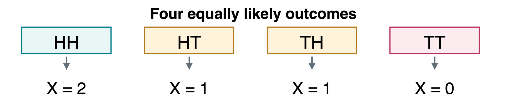
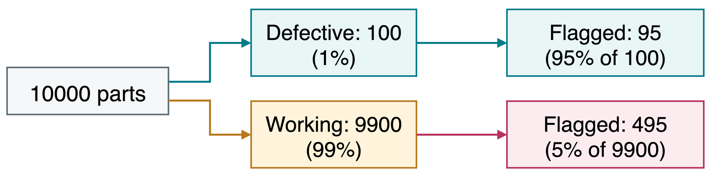

King and heart are independent, although they overlap. Disjoint positive-probability events cannot be independent: learning one rules out the other.
Random Variables and a PMF
A random variable maps each outcome to a value. For two independent fair coin tosses (heads probability 1/2), let X count heads. H means heads and T tails.

A discrete variable has countably many values. Its probability mass function (PMF) gives p_X(x)=P(X=x) for each value x.
Value x
0
1
2
p_X(x)
1/4
1/2
1/4
Uppercase X names the variable. Lowercase x names a possible value. Multiple outcomes can map to the same value.
Mean and Variance
The expectation or mean is a probability-weighted average:
\mu=E[X]=\sum_x x\,p_X(x).
The variance measures spread using squared distances from the mean:
\operatorname{Var}(X)=E[(X-\mu)^2].
For our head count, the PMF is (1/4,1/2,1/4) at x=0,1,2.
An expected value is an average, not a guaranteed outcome. A fair die has mean 3.5, even though no roll produces 3.5.
Linearity of Expectation
Linearity means that the expectation of a sum equals the sum of the expectations:
E[X+Y]=E[X]+E[Y].
Let X be 1 if the first fair coin toss is heads and 0 otherwise. Define Y the same way for the second toss.
E[X]=\frac12,\qquad E[Y]=\frac12,\qquad E[X+Y]=1.
Does the identity still hold if Y=X, so the variables are completely dependent?
Yes: E[X+X]=2E[X]. Linearity does not require independence, provided the expectations exist. This is useful for adding waiting times in HW4.
Continuous Variables and a PDF
A continuous variable takes values along a range. Its probability density function (PDF)f_U(u) gives probability per unit length. Area gives probability.
Let U be uniform on [0,2]: equal-length intervals are equally likely. Its density is 1/2 on that interval and 0 outside it.
Ignoring umbrella use and observing an umbrella answer different questions. For continuous variables, marginalization integrates the joint density instead of summing it.
The Chain Rule
The chain rule writes a joint probability as successive conditional probabilities. It requires no independence assumption.
P(S\mid K)=180/(180+140)=0.5625. The keyword raises the spam probability from 30\% to 56.25\%.
Rare Defects and False Positives
Defective: D. Flagged: F. Base rate:P(D)=0.01 (1% defective).
True-positive rate: flags 95% of defective parts, P(F\mid D)=0.95.
False-positive rate: flags 5% of working parts, P(F\mid\neg D)=0.05.

Among the flagged parts, what fraction are actually defective?
P(D\mid F)=95/(95+495)\approx16.1\%. Most flagged parts are working.
Joint-Probability Practice
An image classifier predicts a handwritten digit. Let:
X be image brightness, scaled to [0,1].
Y be the predicted digit, one of 0,1,\ldots,9.
Suppose P(Y=3)=0.15 and P(X>0.5\mid Y=3)=0.60.
What is the probability that an image is bright and predicted as digit 3?
P(X>0.5,Y=3)=P(X>0.5\mid Y=3)P(Y=3)=0.60(0.15)=0.09. This describes 9\% of images under the model.
Common Probability Distributions
Discrete
Bernoulli
Binomial
Geometric
Poisson
Continuous
Uniform
Normal (Gaussian)
Exponential
Takeaways
Define the sample space, events, and variables before calculating.
Conditioning keeps the observed event and rescales its probabilities.
Independence is a property of the model, not a default assumption.
PMFs assign mass to values. PDFs give probabilities through area.
Bayes’ rule combines likelihoods and base rates to update beliefs.
Linearity lets us add expectations without assuming independence.
Homework 4: Probability in Motion: geometric probability, random walks, and coupon collection. Define your events and show the reasoning behind each step.